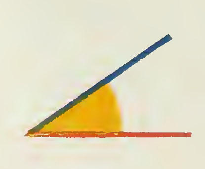

Book I Definitions (I–XXXV)¶
Robert Simson’s 35 Definitions in Chiswick Press Register (pp. xviii–xxii, Leaves 22–26)


I. A point is that which has no parts, or which has no magnitude.
II. A line () is length without breadth.
III. The extremities of a line are points.
IV. A straight or right line () is that which lies evenly between its extreme points.
V–VII. A superficies (surface) has length and breadth only; its extremities are lines; a plane superficies is that in which any two points being taken, the straight line between them lies wholly in that plane.
VIII–IX. A plane angle () is the inclination of two lines to one another in a plane, which meet together, but are not in the same direction; a plane rectilineal angle is contained by two straight lines.
X. When a straight line standing on another straight line makes the adjacent angles equal ( = ), each is called a right angle (), and the standing line is perpendicular (⊥) to the other.
XI–XII. An obtuse angle is greater (⊏) than a right angle; an acute angle is less (⊐) than a right angle.
XIII–XIV. A term or boundary is the extremity of anything; a figure is that which is enclosed by one or more boundaries.
XV–XVIII. A circle () is a plane figure contained by one line (the circumference) such that all straight lines from the centre to the circumference are equal; a diameter passes through the centre and bisects the circle into two semicircles.
XIX–XXIII. A segment of a circle is contained by a straight line and a part of the circumference; rectilineal figures are trilateral (), quadrilateral (), or multilateral.
XXIV–XXVI. Among trilateral figures: an equilateral triangle has three equal sides; an isosceles triangle has two equal sides; a scalene triangle has three unequal sides; further classed as right-angled, obtuse-angled, and acute-angled.
XXVII–XXXII. Among four-sided figures (Simson's subdivision): XXVII. a square () has all sides equal and all angles right; XXVIII. an oblong () is right-angled without equal sides; XXIX. a rhombus is equilateral without right angles; XXX. a rhomboid has opposite sides and angles equal; XXXI–XXXII. trapezia and parallelograms.
XXXIII–XXXIV. Rhomboids and trapezia diagrams on p. xxii.
XXXV. Parallel straight lines (∥) are such as are in the same plane, and which being produced ever so far both ways do not meet.
See Commentary.